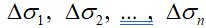

Двойные интегралы, их свойства. Вычисление двойных интегралов в прямоугольных координатах.
1. Двойные интегралы, их свойства
Цилиндрическим телом называется тело, ограниченное плоскостью Oxy, поверхностью , с которой любая прямая, параллельная оси Oz, пересекается не более чем в одной точке, и цилиндрической поверхностью, образующая которой параллельна оси Oz.
Область D, вырезаемая цилиндрической поверхностью на плоскости Oxy, называется основанием цилиндрического тела. При вычислении объема цилиндрического тела будем исходить из следующих свойств объемов:
1. если разбить тело на части, то его объем равен сумме объемов получившихся частей; 2. объем прямого цилиндра равен площади основания, умноженной на его высоту.
Пусть для рассматриваемого цилиндрического тела функция f(x,y) > 0 всюду в области D, то есть поверхность z = f(x,y) всюду в области D, то есть поверхность

Через границу каждой области проведем цилиндрическую поверхность с образующей, параллельной оси Oz. Эти цилиндрические поверхности разобьют поверхность z=f(x,y) на n кусков. Тогда цилиндрическое тело окажется разбитым на n частичных цилиндрических тел.
Возьмем внутри каждой частичной области
точку
и заменим соответствующее частичное цилиндрическое тело прямым цилиндром с тем же основанием
и высотой, равной
В результате получим n-ступенчатое тело, объем которого